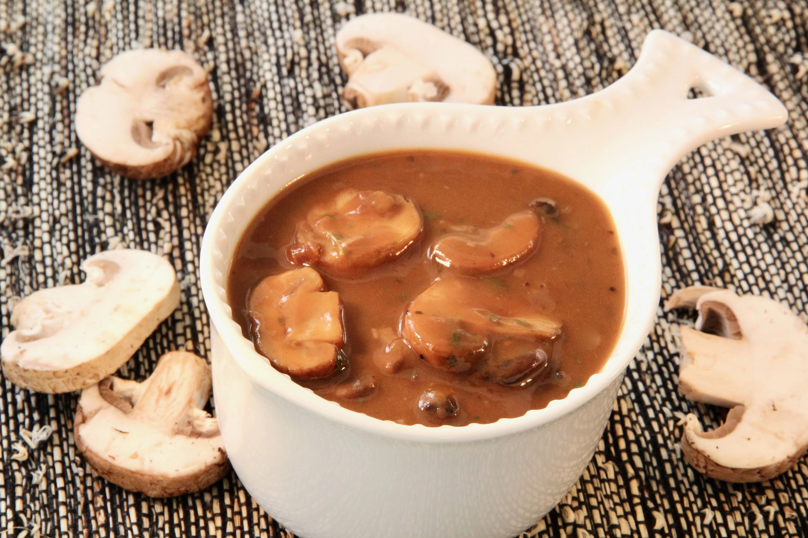

Mushroom Gravy

This gravy is sure to please any vegetarian or even non-vegetarian.
It's flavorful, rich, and is as good on turkey or prime rib as it is on a
vegetarian meatloaf or mashed potatoes.
It can be made in advance, stored in the fridge, and reheated on the
stovetop or in the microwave.
Ingredients
- 5 tablespoons unsalted butter, divided
- 3 tablespoons shallot, minced
- 12 ounces baby bella mushrooms, sliced
- 2 cloves garlic, minced
- ½ teaspoon salt
- ½ teaspoon ground black pepper
- ⅓ cup sherry
- ¼ cup all-purpose flour
- 3 cups vegetable broth (such as Kitchen Basics®)
- 1 ½ teaspoons dried tarragon
- 3 teaspoons low-sodium soy sauce
Directions
-
Melt 2 tablespoons butter in a large skillet over medium heat. Add
shallot and cook, stirring occasionally, until shallots are a deep
golden brown, 2 to 3 minutes. Stir in mushrooms, garlic, salt, and
pepper. Cook, stirring occasionally, until mushrooms are nicely browned,
3 to 5 minutes.
-
Pour sherry into the pan and bring to a boil while scraping the browned
bits of food off the bottom of the pan with a wooden spoon. Cook and
stir until sherry is reduced, about 2 minutes. Remove mushroom mixture
from the skillet and set aside.
-
Reduce heat to medium-low and melt remaining 3 tablespoons of butter in
the skillet. Add flour to make a roux, stirring continuously, until
mixture is light golden brown, about 2 minutes. Add vegetable broth and
tarragon; whisk until gravy is smooth and no lumps of flour remain.
-
Increase heat to medium-high, return mushroom mixture to the skillet,
and bring to a boil. Reduce heat to low and simmer, uncovered, until
mixture has reduced, about 8 minutes. Stir in soy sauce. Adjust
seasonings, if necessary.
Cook's Note
If reheating, add a bit more broth to thin out the gravy if necessary.
Nutrition Facts
Per Serving: 232 calories; protein 4.5g; carbohydrates
19.7g; fat 15.1g; cholesterol 38.2mg; sodium 897mg.